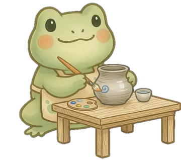
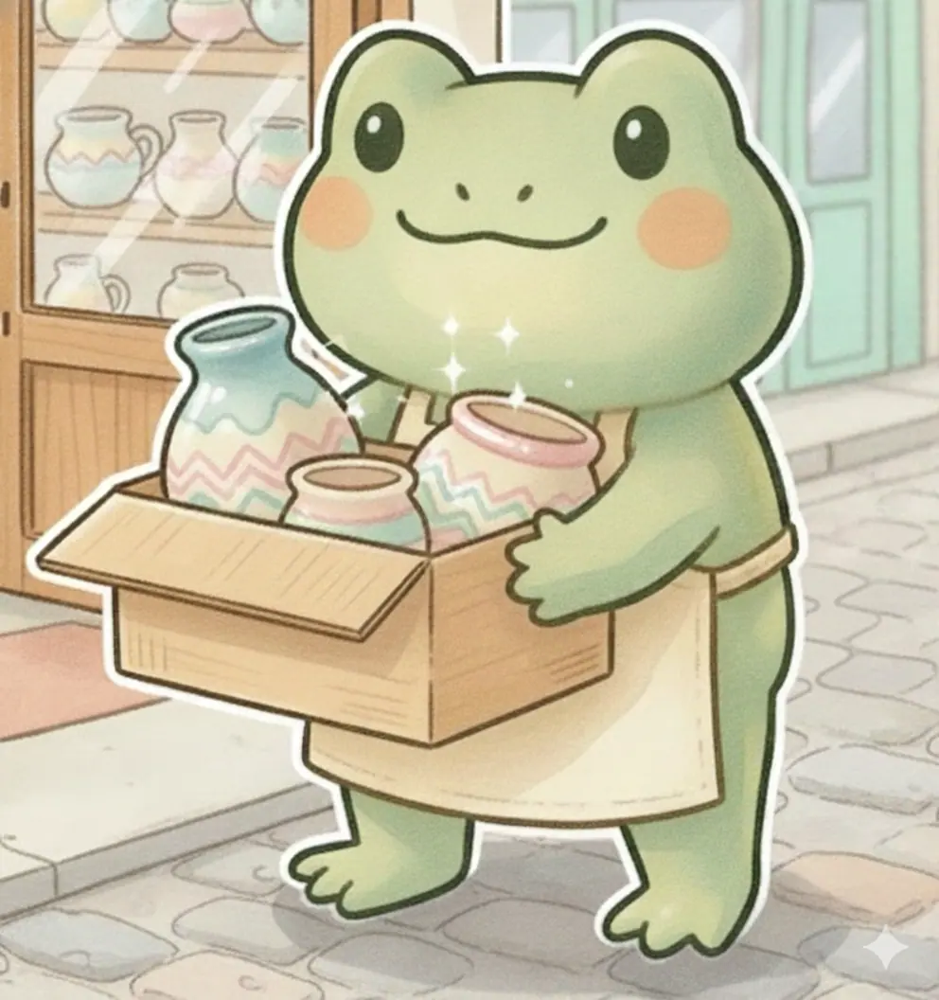

So einfach funktioniert's
Vom weißen Rohling zum glänzenden, spülmaschinenfesten Lieblingsstück.

Rohling aussuchen
Wähle aus über 200 verschiedenen Keramikrohlingen deinen Favoriten: von Tassen und Müslischalen über Teller, Vasen, Kannen bis hin zu süßen Tierfiguren.

Malen & Gestalten
Wir erklären dir alle Farben und Werkzeuge. Suche dir deine Lieblingsfarben aus und experimentiere mit Pinseln, Schwämmen, Stempeln oder Klebebändern.

Glasieren & Brennen
Du lässt dein bemaltes Stück bei uns. Wir tauchen es in eine transparente Glasur und brennen es bei über 1.000 °C in unserem Spezialofen vor Ort.

Glücklich abholen
Nach 5–7 Werktagen ist dein Kunstwerk fertig gebrannt, strahlend glänzend, lebensmittelecht und spülmaschinenfest – bereit zum Mitnehmen!
Beliebte Maltechniken
Mit diesen Techniken gelingt jedem ein unverwechselbares Design – ganz ohne Zeichentalent!

Blubberblasen
Mit einem Strohhalm pusten wir Glasurfarbe mit Seifenlauge auf. Beim sanften Auflegen der Keramik entstehen zarte, organische Schaummuster.

Marmorieren
Durch sanftes Drehen und Ineinanderfließen mehrerer Farben entstehen edle Marmorierungen. Jedes Stück wird garantiert ein Einzelstück.

Klebemotive & Abklebeband
Klebe Muster, Streifen oder Schriften ab, tupfe Farbe darüber und ziehe das Band wieder ab – für saubere, klare Kanten.

Kristallglasur
Kleine Kristalle schmelzen beim Brennen und öffnen sich wie farbige Feuerwerke. Das Ergebnis bleibt bis zur Abholung eine schöne Überraschung.

Farbverläufe & Tupfen
Mit feinen Naturschwämmen entstehen weiche Farbverläufe – ideal als Hintergrund für Schriften oder kontrastreiche Motive.
Lust bekommen, es selbst auszuprobieren?
Sichere dir jetzt deinen Lieblingstermin und werde kreativ!
Jetzt Termin buchen